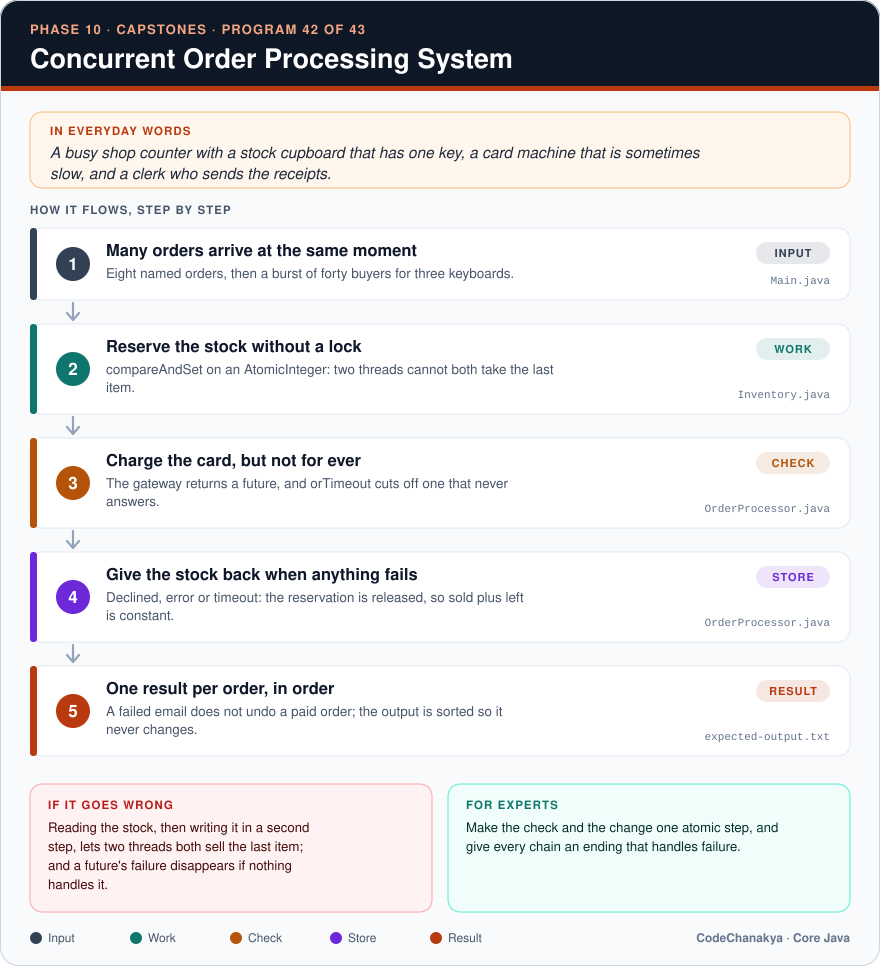

Phase 10 · Capstones · Program 42 of 43
Concurrent Order Processing System
The problem
A shop gets many orders at the same moment. Each one must reserve stock, charge a card that is sometimes slow or broken, and send a confirmation. Doing them one after another makes everyone wait behind the slowest card. Doing them all at once is fast, and it is where the bugs live.
The system keeps five promises while hundreds of orders run together: never oversell, never lose stock, never wait for ever, give every order exactly one answer, and do not undo a paid order because an email failed. Stock is taken with compareAndSet and the payment chain is built from CompletableFuture.
See the flow
The whole program as one picture. Read it top to bottom; the colour of each card says what kind of step it is.


If you are new to coding
A busy shop counter with a stock cupboard that has one key, a card machine that is sometimes slow, and a clerk who sends the receipts.
If you are learning
Follow the numbered cards from top to bottom. Open the file named on each card, run the program, and match its output to the last card.
If you are experienced
Make the check and the change one atomic step, and give every chain an ending that handles failure.
Text version of the flow
- Many orders arrive at the same moment (input): Eight named orders, then a burst of forty buyers for three keyboards.
- Reserve the stock without a lock (work): compareAndSet on an AtomicInteger: two threads cannot both take the last item.
- Charge the card, but not for ever (check): The gateway returns a future, and orTimeout cuts off one that never answers.
- Give the stock back when anything fails (store): Declined, error or timeout: the reservation is released, so sold plus left is constant.
- One result per order, in order (result): A failed email does not undo a paid order; the output is sorted so it never changes.
Read in this order
- 1Inventory.javaStock as ConcurrentHashMap of AtomicInteger, taken with a compareAndSet loop.
- 2PaymentGateway.java, FakeGateway.javaThe slow, declined and broken cards, made on purpose.
- 3OrderProcessor.javareserve, charge with a timeout, then confirm or give the stock back.
- 4Notifier.javaConfirmations; one address always fails.
- 5InventoryTest.javaIncluding 200 threads fighting for 50 items, 50 times.
- 6Main.javaEight orders, then forty buyers for three keyboards.
The code
package com.codechanakya.orders; import java.util.Map; import java.util.TreeMap; import java.util.concurrent.ConcurrentHashMap; import java.util.concurrent.atomic.AtomicInteger; /** * Stock levels that many threads can change at the same time. * * <p>Each product has an {@link AtomicInteger}. {@link #reserve} reads the level, checks it, and tries to * swap in the lower level with {@code compareAndSet}. If another thread got there first the swap fails and * the loop tries again with the fresh value. So the check and the change act as one step, and stock can * never go below zero, without locking anything. */ public class Inventory { private final Map<String, AtomicInteger> stock = new ConcurrentHashMap<>(); public Inventory(Map<String, Integer> initial) { initial.forEach((sku, quantity) -> stock.put(sku, new AtomicInteger(quantity))); } /** Takes {@code quantity} units if all of them are there. Returns false, changing nothing, if not. */ public boolean reserve(String sku, int quantity) { AtomicInteger level = stock.get(sku); if (level == null || quantity <= 0) { return false; } while (true) { int current = level.get(); if (current < quantity) { return false; } if (level.compareAndSet(current, current - quantity)) { return true; } } } /** Puts units back, for an order that was reserved and then did not go through. */ public void release(String sku, int quantity) { stock.get(sku).addAndGet(quantity); } public int available(String sku) { AtomicInteger level = stock.get(sku); return level == null ? 0 : level.get(); } /** A sorted copy of all levels. A copy, so the caller cannot change the inventory by accident. */ public Map<String, Integer> snapshot() { Map<String, Integer> copy = new TreeMap<>(); stock.forEach((sku, level) -> copy.put(sku, level.get())); return copy; } }
package com.codechanakya.orders; import java.time.Duration; import java.util.List; import java.util.concurrent.CompletableFuture; import java.util.concurrent.CompletionException; import java.util.concurrent.ExecutionException; import java.util.concurrent.TimeUnit; import java.util.concurrent.TimeoutException; /** * Processes orders without blocking: reserve stock, charge the card, send the confirmation. Each step starts * when the one before it finishes, and no thread waits in between. * * <p>Rules that keep it safe: stock is reserved first, because it is the scarce thing; it is given back on every * path that does not complete; a payment that takes too long times out; a failing confirmation never undoes a * paid order; and every order ends with exactly one {@link OrderResult}, whatever goes wrong. */ public class OrderProcessor { private final Inventory inventory; private final PaymentGateway gateway; private final Notifier notifier; private final Duration paymentTimeout; public OrderProcessor(Inventory inventory, PaymentGateway gateway, Notifier notifier, Duration paymentTimeout) { this.inventory = inventory; this.gateway = gateway; this.notifier = notifier; this.paymentTimeout = paymentTimeout; } public CompletableFuture<OrderResult> process(Order order) { if (!inventory.reserve(order.sku(), order.quantity())) { return CompletableFuture.completedFuture(new OrderResult(order.id(), OrderStatus.OUT_OF_STOCK, "not enough stock of " + order.sku())); } return gateway.charge(order.card()) .orTimeout(paymentTimeout.toMillis(), TimeUnit.MILLISECONDS) .thenCompose(accepted -> accepted ? confirm(order) : declined(order)) .exceptionally(error -> failed(order, error)); } /** Processes every order at once and returns the results in the same order as the orders. */ public CompletableFuture<List<OrderResult>> processAll(List<Order> orders) { List<CompletableFuture<OrderResult>> futures = orders.stream().map(this::process).toList(); return CompletableFuture.allOf(futures.toArray(new CompletableFuture[0])) .thenApply(done -> futures.stream().map(CompletableFuture::join).toList()); } private CompletableFuture<OrderResult> confirm(Order order) { return notifier.send(order.email(), "order " + order.id() + " confirmed") .handle((nothing, error) -> new OrderResult(order.id(), OrderStatus.COMPLETED, error == null ? "paid and confirmed" : "paid, but the confirmation failed")); } private CompletableFuture<OrderResult> declined(Order order) { inventory.release(order.sku(), order.quantity()); return CompletableFuture.completedFuture(new OrderResult(order.id(), OrderStatus.DECLINED, "card declined")); } private OrderResult failed(Order order, Throwable error) { inventory.release(order.sku(), order.quantity()); Throwable cause = unwrap(error); if (cause instanceof TimeoutException) { return new OrderResult(order.id(), OrderStatus.TIMED_OUT, "no answer from the payment gateway"); } return new OrderResult(order.id(), OrderStatus.FAILED, cause.getMessage()); } /** A failure passed down a chain arrives wrapped in a CompletionException. This finds the real one. */ static Throwable unwrap(Throwable error) { Throwable current = error; while ((current instanceof CompletionException || current instanceof ExecutionException) && current.getCause() != null) { current = current.getCause(); } return current; } }
Only the key files are shown. The rest are in the repository.
Run it
$ ./run.sh --check
== Orders, all processed at the same time
order 1: COMPLETED paid and confirmed
order 2: COMPLETED paid and confirmed
order 3: DECLINED card declined
order 4: FAILED gateway unavailable
order 5: TIMED_OUT no answer from the payment gateway
order 6: OUT_OF_STOCK not enough stock of TY-401
order 7: COMPLETED paid, but the confirmation failed
order 8: OUT_OF_STOCK not enough stock of ZZ-999
== Confirmations sent for those orders (sorted, because threads finish in no fixed order)
asha@example.com: order 1 confirmed
bilal@example.com: order 2 confirmed
== Burst: 40 buyers for the last 3 keyboards
{COMPLETED=3, OUT_OF_STOCK=37} (which three buyers won is not fixed, but the count always is)
== Stock at the end (every failed order gave its stock back)
BK-101 15
EL-202 0
HM-301 4
TY-401 7
OK: output matches expected-output.txt
This is the real output from OpenJDK 21.0.13 on Linux. The output was identical on eight runs in a row, because it prints only what does not change: sorted lines and counts. The project's GitHub Actions run is the check on Java 21 and 25 with real Maven and the real JUnit jar. It has not yet been run on Windows or macOS. Run ./run.sh --test for the JUnit tests.
Try it yourself
- BeginnerAdd a new result for an invalid order.
- IntermediateWrite a gateway that retries once.
- IntermediateSummarise the results by status.
- IntermediateLimit how many orders run at once.
- ChallengeAdd a second warehouse and reserve from both.
- ChallengeReplace the pool with virtual threads and compare.
Hints and solutions are in the exercises and solutions folders. Try first.
Break it on purpose
Three files: a lost update, a thread pool that waits for itself, and a failure nobody sees. The README in the broken folder explains each one.